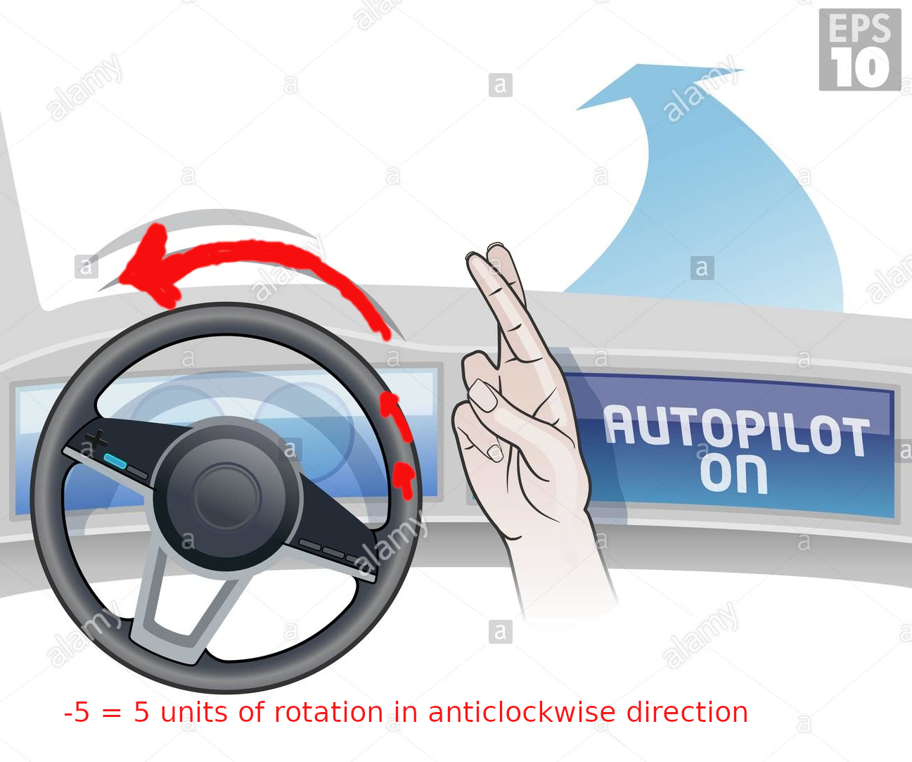

Most of the self-driving cars use images to decide there action. Like if you see a right turn, you turn your steering clockwise some unit and if left then anti-clockwise to some unit and this keeps your car smoothly on the road, similarly a ml model takes input as image and outputs rotation of the steering.

-5

10

0

6

0

-9
Training example
Most of AI algorithm needs pre-training before execution as we humans are pre-schooled to answer 2+2 = 4 because we were taught 1+1 = 2 and 2+1 = 3 or learn to recognize A for apple, B for ball.
Let's look at our first example, the input is left turning road and label is -5 which means whenever you see a left-turning road steering should be anti-clockwisewith some unit, if it's turning too much then it would be -20,-30, etc and if little then -4,-5,-3 are fine and vice versa for right-turning images.
Pre-Processing
The next step is to simplify images so that we can feed our algorithm.
1. Coverting RGB image to greyscale
2. And greyscale to lower dimension.
3. Flattening to a single row.
-5
: 5
| 00 | 11 | 12 | 00 | 00 |
| 02 | 32 | 43 | 01 | 00 |
| 00 | 54 | 56 | 76 | 00 |
| 30 | 56 | 68 | 78 | 00 |
Similarly for all examples
-
-5
00 00 05 04 00 10 14 03 02 12 11 02 04 04 01 00 -
10
00 01 04 04 02 11 12 02 03 14 10 00 04 05 00 00 -
0
00 08 08 00 00 12 12 00 00 10 10 00 00 08 08 00 -
6
00 00 06 14 00 06 12 10 00 15 20 11 06 11 05 00 -
0
00 10 10 00 00 11 11 00 00 12 12 00 00 11 11 00 -
-9
10 08 10 00 12 20 12 00 00 15 10 06 00 08 06 00
Training
Now we are ready to start the training, we have all the data in single row vector of length 16 with their labels.
The first step is to pick 16 random numbers as a row vector and name it as weights(W):
| 1 | -3 | 1 | 4 | -2 | 6 | -3 | 5 | 0 | -1 | 0 | -1 | 2 | 0 | 1 | -7 |
Then pick one of the examples.
exampla(X) with label -9
| 00 | 00 | 12 | 11 | 00 | 15 | 13 | 05 | 07 | 00 | 00 | 00 | 12 | 00 | 10 | 14 |
Next step is to multiply every element of both the rows i.e weights and example and then sum them all.
[w1*x1 + w2*x2...... + w19*x19 + w20*x20]
[ 1*00 + -3*00 +...1*10 + -7*14 ] = 68
Bingo! you have made your first prediction and the output is 68 and which is incorrect 😅
Loss = |predicted output - actual label|
With random weights our model predicted 68 which 77 point less than actual label -9. This means our model is terribly wrong and now we have to change the weights so that when multipled and sumed with example, it gives -9
Actual Predicted Loss
Similarly for all examples
-
-5 {{ p0()}} {{ l0() }}
00 00 05 04 00 10 14 03 02 12 11 02 04 04 01 00 -
10 {{ p1() }} {{ l1() }}
00 01 04 04 02 11 12 02 03 14 10 00 04 05 00 00 -
00 {{ p2()}} {{ l2()}}
00 08 08 00 00 12 12 00 00 10 10 00 00 08 08 00 -
06 {{ p3()}} {{ l3() }}
00 00 06 14 00 06 12 10 00 15 20 11 06 11 05 00 -
00 {{ p4() }} {{ l4() }}
00 10 10 00 00 11 11 00 00 12 12 00 00 11 11 00 -
-7 {{ p5() }} {{ l5() }}
10 08 10 00 12 20 12 00 00 15 10 06 00 08 06 00
{{ overall_loss() }}
Overall loss :
Above are the weights which we have to change(fine tune) to reduce the loss and overall loss near to zero as much as possible.
After few trail and error with weights, I got loss from 342 to 11. if you got better loss, please share in comment section. Here is mine:
1,1,-1,1,-2,3,-3,1,2,-1,0,-1,4.5,0,1,-7
Prediction
As we have optimized weights, we can flatten a new image and multiply each element with one and other with weights and then sum them to get the direction as we have seen pre-processing steps, but with random weights, we got terrible results. Let's see with trained weights:
| 00 | 00 | 12 | 11 | 00 | 15 | 13 | 05 | 07 | 00 | 00 | 00 | 12 | 00 | 10 | 14 |
[ 1*00 + 1*00 + -1*12 + ... + 1*10 + -7*14 ] = -10
Voila! It is pretty close to -9 as we have seen earlier in the first example where with random weights it predicted 68.
Improvement in the model can be seen on only 6 examples, more examples will cover all the cases and patterns and hence the greater accuracy and lower loss.